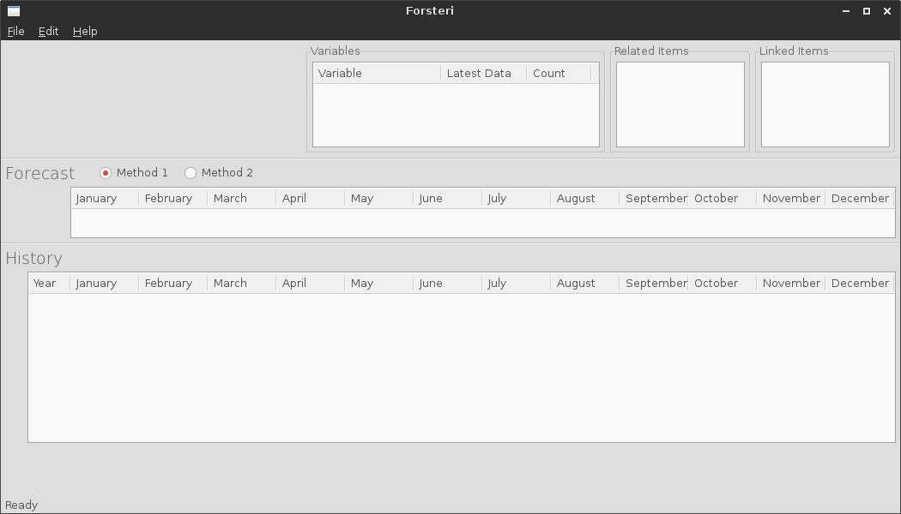

Getting Started¶
Linux¶
To open the software, run the command$ python gui.pyfrom the terminal. You should also make sure you have the Python 3 version. If you have installed from the windows branch then use Python 2.
Windows¶
I am not sure how I am going to set this up yet, so wait for confirmation.
If you were successful in starting the program you will now see the following frame.
